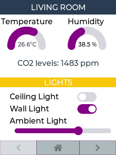

Example 2
Code~
pages.jsonl file:
```json {"page":0,"comment":"---------- Page 0 ----------"} {"id":0,"bg_color":"#FFFFFF","text_color":"#000000","radius":0,"border_side":0} {"objid":10,"id":1,"x":0,"y":0,"w":240,"h":30,"txt":"LIVING ROOM","value_font":22,"bg_color":"#2C3E50","text_color":"#FFFFFF","radius":0,"border_side":0} {"objid":22,"id":2,"x":5,"y":45,"w":140,"h":100,"max":40,"border_side":0,"type":0,"rotation":0,"start_angle":180,"end_angle":0,"start_angle1":180,"value_font":12,"value_ofs_x":-19,"value_ofs_y":-4,"bg_opa":0} {"objid":22,"id":3,"x":130,"y":45,"w":140,"h":100,"max":100,"border_side":0,"type":0,"start_angle":180,"end_angle":0,"start_angle1":180,"value_font":12,"value_color":"#000000","value_ofs_x":-19,"value_ofs_y":-4,"bg_opa":0} {"objid":10,"id":4,"x":0,"y":120,"w":240,"h":20,"val":0,"txt":"CO2 levels: ","radius":0,"border_side":0} {"objid":12,"id":5,"x":2,"y":35,"w":140,"txt":"Temperature"} {"objid":12,"id":6,"x":140,"y":35,"w":140,"txt":"Humidity"} {"objid":10,"id":7,"x":0,"y":160,"w":240,"h":20,"txt":"LIGHTS","bg_color":"#F1C40F","text_color":"#FFFFFF","radius":0,"border_side":0} {"objid":12,"id":8,"x":20,"y":190,"w":40,"h":20,"txt":"Ceiling Light"} {"objid":40,"id":9,"x":160,"y":190,"w":40,"h":20,"toggle":"TRUE"} {"objid":12,"id":10,"x":20,"y":215,"w":40,"h":20,"txt":"Wall Light"} {"objid":40,"id":11,"x":160,"y":215,"w":40,"h":20,"toggle":"TRUE"} {"objid":12,"id":12,"x":20,"y":240,"w":40,"h":20,"txt":"Ambient Light"}
{"page":254,"comment":"Navigation items at bottom"} {"objid":10,"id":1,"x":0,"y":290,"w":76,"h":30,"opacity":50,"txt":"\uF053","radius":0,"bg_color":"#34495E","text_color":"#000000"} {"objid":10,"id":2,"x":75,"y":290,"w":90,"h":30,"opacity":100,"txt":"\uF015","radius":0,"bg_color":"#34495E","text_color":"#000000"} {"objid":10,"id":3,"x":164,"y":290,"w":76,"h":30,"opacity":100,"txt":"\uF054","radius":0,"bg_color":"#34495E","text_color":"#000000"}```
Result~
